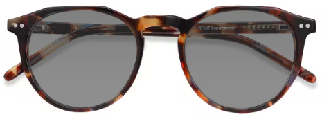
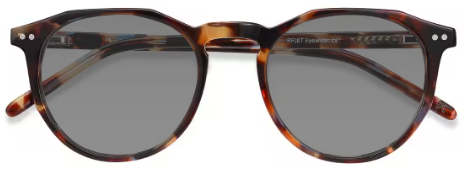

Description du produit
Notre site de vente de lunettes propose une sélection d'articles élégants et tendance. Découvrez une variété de styles allant des classiques intemporels aux designs modernes et audacieux. Chaque paire est soigneusement choisie pour offrir confort, style et qualité.

 
